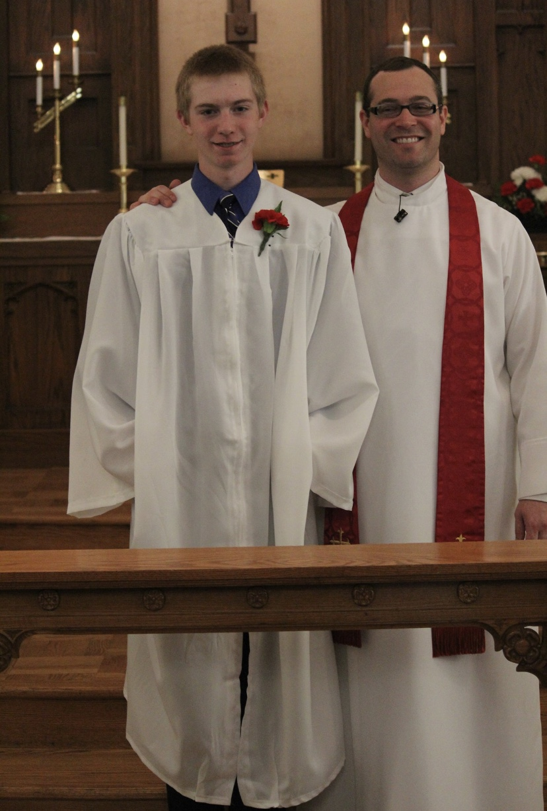
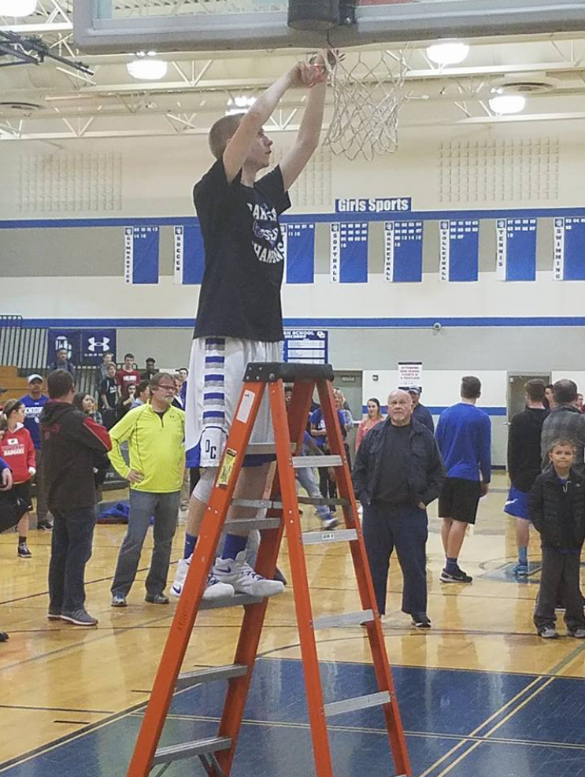

I attended elementary school at Zion Lutheran in South Milwaukee. My class was small, only ever exceeding twenty kids for two years, and eventually having a graduating class of fifteen. My parents felt it was important to have me go to this school to help create a foundation in my faith by surrounding me with similar individuals for the first part of my life. This school also provided a higher level of education that the public elementary and middle schools in Oak Creek.
I then went on to Oak Creek High school. This was a large jump from a class of 15 to a class of 513 and from a school of about 200 to a school of about 2,000. After four years I graduated in the top 5% of my class, lettering for both basketball and bowling and being awarded scholarships for academic success while being a student athlete, and the chancellor's scholarship.
I began college at the University of Wisconsin-Madison in the fall of 2018. I was initially admitted into the college of engineering with the intentions of majoring in chemical engineering. In my sophomore year, I decided to transfer to the college of letters and science, with the intentions to apply to the school of journalism and mass communications. I am also working towards certificates in athletic communications and digital media studies. I plan to use these to become a sports beat writer for NCAA college basketball and/or the MLB with the hopes of one day working into broadcasting and analytics like former Wisconsin alum Andy Katz.